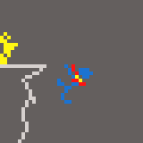

This is how our story ends?
You take the upper path. You continue along path for what seems like ages. Eventually it gets very steep, really taking a toll upon your leg. After what seems like hours, the sun begins to rise just as you reach the very top of the path. You take a few steps forwards before realizing all of that work was for nothing. You're met with a cliff, and no way down. You can't make the trip down so you lie down, and swiftly fall asleep. You are awoken by the sounds of heavy breathing and a struggle. You force your beaten body up, and see a large figure climbing behind you, struggling worse than you did. They may have struggled, but you're the only who's struggle will get much worse. This figure is armed with a crossbow, you they don't look like an animal hunter. You take a couple of steps back, as they advance towards you. They quickly raise the crossbow, and take a shot. The shot goes straight into your shoulder, causing you to stumble back, and off the edge. Goodbye.
